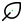

ColorMeshTiles
BIM-ready Idempotent Engine. Consolidates Mega-Meshes per surface and binds them into Rhino Groups.
Overview
BIM-ready Idempotent Engine. Consolidates Mega-Meshes per surface and binds them into Rhino Groups.
Inputs (9)
- polylines (Curve): Tree of polylines
- gradient_colors (Colour): List of gradient colors
- accent_color (Colour): Accent color
- axis (Integer): Axis (0=X, 1=Y, 2=Z)
- jitter_pct (Number): Jitter percentage
- accent_pct (Number): Accent percentage
- inset_factor (Number): Inset factor
- bake_trigger (Boolean): Bake trigger
- bake_name (Text): Bake name
Outputs (4)
- panel_mesh (Mesh): Consolidated panels
- panel_colors (Colour): Panel colors
- panel_tags (Text): Panel tags
- panel_geometry (Curve): Panel geometry curves